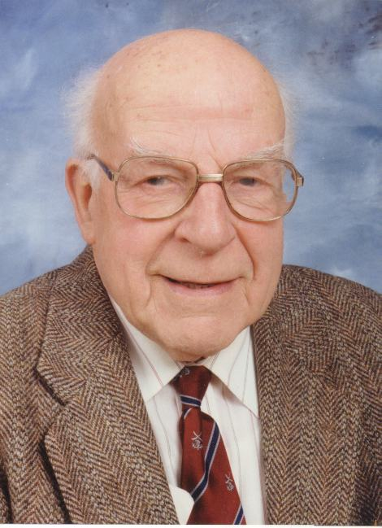

With the death of Dr C. Arnold Beevers, Reader Emeritus in Crystallography at the University of Edinburgh on 16 January, 2001, we have said farewell to a great man, who was scientist, teacher, inventor, humanitarian and humorist in a rare combination. Arnold was born in Manchester on 27 May, 1908, but his family moved shortly thereafter to Liverpool, a city of which he was always proud. His father was a master tradesman, whose work included the installation of the glass roof of the Lever factories. He obtained a B.Sc. in Physics from the University of Liverpool in 1929, and a D.Sc. in 1933. While there, he was greatly influenced by Professor Lionel Wilberforce, whose well-designed springs and clamps Arnold never tired of demonstrating. After graduation, he was asked to set up work in the relatively new subject of X-ray diffraction together with Henry Lipson, a colleague and friend for many years. The two of them made frequent trips (sometimes by bicycle) to the University of Manchester to get advice from Lawrence Bragg, and Arnold eventually moved to a post there. After a short appointment at Hull, Arnold was appointed in 1938 to the Dewar Fellowship in Crystallography. This was a post offered jointly by the Departments of Physics and Chemistry at the University of Edinburgh, and he was elected Fellow of the Royal Society of Edinburgh later that year. And in Edinburgh he remained, coming into his office in the Chemistry Department for the last time less than two months before he died.
As a young adult, Arnold, like Kathleen Lonsdale, felt drawn to join the Religious Society of Friends (Quakers) and his deep faith in and with that body greatly influenced his approach to science and to life. He was unswervingly committed to humanitarian causes, and in particular to world peace, and he strongly disliked any form of superstition or other obscurantism, and any sort of pomposity. His life was touched by tragedy, especially the severe dementia which overtook his wife Marjorie in the late 1950's, and which grew ever worse until her death in 1992. Sadly, a similar problem affected Yvonne, his second wife, who died in 1998. In these circumstances, his never-failing sense of humour was all the more remarkable.
Arnold's scientific contributions were many. From his early days, he is most remembered now for the Beevers-Lipson strips, and the technique by which they reduced the huge calculations of three-dimensional Fourier summations to sums of manageable one-dimensional ones. These attractive boxes of strips of card were produced in great quantity until the digital computer became generally available in the late 1960's. The technique is still used in many computer programs. Arnold's earliest structural publication was a correct and beautiful reinterpretation of the structure of beryllium sulfate tetrahydrate as interpenetrating tetrahedra of Be(H2O)42+ and SO42- ions. Previously, a remarkably imprecise treatment had found that the sulfate ions were planar! Arnold rapidly became involved in determinations using Fourier methods and the new Patterson method; important examples were the alums, copper sulfate pentahydrate, and particularly the so-called b-alumina, NaAl11O17, which he published with the late Dr Marion Ross. Originally studied as a troublesome impurity in Al2O3 production, it is now an important solid-state ionic conductor, and two sites in the structure are known as Beevers-Ross and anti-Beevers-Ross sites.
Arnold's arrival in Edinburgh was soon followed by the outbreak of the Second World War. As a conscientious objector, he was sent to assist Professor Norman Dott at the Western General Hospital in his work on electroencephalography. Arnold threw himself enthusiastically into this work, particularly as it threw light on the nature of sleep, and this interest remained with him for the rest of his life.
After the war, Arnold joined the Department of Chemistry as a member of staff, and built up an X-ray diffraction laboratory there, mainly with equipment he had designed himself. His generators and cameras were characteristically robust and precisely engineered. The arrival of Professor E.L. Hirst and the growth of his carbohydrate group encouraged Arnold to investigate the then daunting structures of sugars, and ones he studied included glucose, and sucrose in the form of its sodium bromide adduct.
As a teacher, Arnold gave lectures of a highly individual nature, which have remained in the memories of generations of students. As an experimenter, he delighted in demonstrations, although they did not always behave for him. One lecture ended uproariously as an explosion he had attempted to demonstrate finally worked in the hands of the technician who was removing the apparatus. Happily, no serious damage was done to the technician or anyone else! Younger colleagues were surprised (to say the least) to see Arnold showing the bones of his hand to visitors by using the direct beam from the lab X-ray generators. Again, he always seemed to get away with it. His crystallography lectures generally featured safer equipment, including the collection of plasticene elephants he used to occupy the sites of a lattice. He also had a large assortment of collecting boxes for Dr Barnardo's Homes for this purpose, frequently pointing out that this was an excellent charity and that the boxes had another useful function! He was honoured one year by a song from the honours students, showing that they had learned at least something from him:
Twinkle, twinkle, little star
How I wonder how you are?
For you have five points, I see,
And I know that cannot be.
You must be point group 33
A new system of symmetry!
Possibly his most lasting impact as a teacher was his teaching of chemistry for dental students over many years. In 1946, he published an elegant interpretation of the structure of fluorapatite, the ideal bone and teeth mineral, showing the function of the fluoride ions in holding it together. Thereafter he became devoted to the cause of improving dental health by adding fluoride to drinking water supplies which were deficient in it. He often spoke at rallies on this subject, cheered on by his students, and was once caught in a photograph by the Scotsman with raised fist, in a most unpacific manner! When he retired in 1978, the Edinburgh University Dental Society gave him a life membership of which he was always very proud.
Arnold was for many years active in the Edinburgh Cripple Aid Society. He was in much demand as a helper, particularly as Master of Ceremonies at plays and concerts. An epileptic seizure affecting a leading lady never fazed him, and he could immediately take over, often getting the audience engaged in community singing. He displayed this ability equally at international scientific meetings. Particularly famous at home and abroad was his version of "My Bonnie lies over the Ocean" in which the singers must stand up or sit down on each word beginning with "b". Generally, by the third chorus, even a group of scientists were coping with all the "bring backs"! At one international school, he produced a song for the final dinner, which took place after a particularly long and boring lecture. At the end of the song, Arnold remarked brightly, as no one else would have dared, "I wrote that in Professor H****'s lecture this morning. Had he gone on any longer, there would have been even more verses!"
The involvement with handicapped people was very important in Arnold's last major scientific contribution, what are now known as Beevers Miniature Models. Arnold moved away from structure determination after 1960, as he was never really happy with the advent of the digital computer; for the first time, he was being asked to use equipment which he could not fully comprehend and design himself. He sensed the need for accurate ball-and-spoke models on a scale much smaller than that of the inch to Ångstrom models then available, and developed precision drilling machines to enable the scale to be reduced to 1 cm per Ångstrom. After some experimentation, he fixed on the 7mm perspex spheres and 1mm steel rod now used, being determined that the models must be both accurate and elegant. Typically, he published his methods and would have no truck with the idea of a patent, which he saw as unfairly denying public access to his ideas and methods. The calculations required for drilling, he carried out manually, using a Wulff net for his stereographic projections. From the beginning, much of the work was carried out by handicapped workers, including at one time Brian Wilson, the world's longest surviving patient on renal dialysis (as listed in the Guinness Book of Records!). These workers clearly took great pride in their work, which have gone all over the world, to institutions ranging from a school in Port Moresby, New Guinea, to I.B.M. Research. Over the years, the Models were taken over by the University, and Arnold accepted that lesser mortals would have to use the computer even for drilling calculations. He was actually pleased to see himself eventually on a website!
The Beevers Miniature Models Unit continues, showing that he was right that computer modelling would not replace completely the elegant, permanent model in museums, teaching or research. Arnold is survived by Lois and John, his daughter and son, by four grandchildren and five great-grandchildren. Many former students and colleagues world-wide have joined in sending them their sympathy and their happy memories of a great and kind man.
Robert and Sheila Gould
Further information about Arnold Beevers
 Click here to return to BCA homepage
Click here to return to BCA homepage